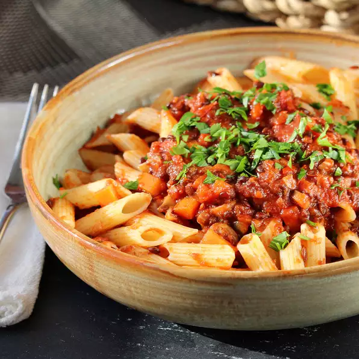

Lentil Bolognaise

Cheap. Healthy. Filling.
This 'old faithful' is not only cheap and healthy, it also contains a tonne of flavour whilst being super quick to make. The lentil sauce can be used in a bunch of different ways, I sometimes make a big batch and have some on toast the next day for a nutritious start to the day.
Ingredients
(measurements are guidelines, feel free to adjust to taste)
- 1 tablespoon olive oil, or to taste
- 1 onion, finely chopped
- 2 cloves garlic, crushed and finely chopped
- 1/2 red bell pepper, thinly sliced
- 1 carrot, cut into small cubes
- 1/2 cup thinly sliced mushrooms
- 1/2 cup red wine
- 1 can diced tomatoes
- 1 cup vegetable broth
- 1 can green or brown lentils, drained
- 1 teaspoon ground paprika
- 1 teaspoon dried basil
- 1 teaspoon dried oregano
- 1 teaspoon mixed dried herbs (optional)
- 1 pinch ground nutmeg (optional)
- Salt to taste
- Pepper to taste
Steps
-
Heat olive oil in a large pot over medium heat. Cook and stir onion and garlic until soft, about 5 minutes. Stir in red bell pepper and carrot; cook for 4 to 5 minutes. Add mushrooms; cook and stir until softened, about 2 minutes.
-
Pour wine into the pot; simmer until slightly reduced, about 1 minute. Stir in diced tomatoes and vegetable broth. Bring sauce to a boil; reduce heat and simmer until flavors combine, 10 to 15 minutes. Stir in lentils, paprika, basil, oregano, dried herbs, and nutmeg; cook until lentils are heated through, about 5 minutes. Add salt and pepper to taste.
Cook's Notes
Substitute white wine for the red wine if preferred.
You can also use dried lentils for this recipe. Rinse well, put into a saucepan, and cover with cold water. Bring to a boil; reduce heat and simmer uncovered until tender, about 30 minutes. Drain and use in the recipe.
Nutrition Facts
Per Serving: 202 calories; protein 9g; carbohydrates 27.2g; fat 3.9g; sodium 398.6mg.
Back to home
Recipe Source